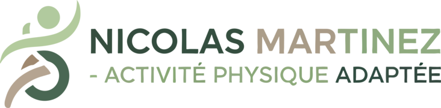

Pour qui ?
Rester actif selon son profil.
- Seniors souhaitant garder appuis, autonomie et confiance.
- Jeunes retraités qui veulent reprendre en douceur avec régularité.
- Personnes fragilisées ou peu à l'aise avec le mouvement.

Sport santé · activité physique adaptée · Saint-Maime
Brochure
Des séances d'activité physique adaptée pensées pour reprendre des appuis, retrouver de l'aisance dans les gestes du quotidien et avancer dans un cadre chaleureux, sérieux et rassurant.
L'essentiel
Un accompagnement sans pression de performance, construit autour du rythme de la personne, de ses besoins du moment et de son environnement de vie.
Pour qui ?
Ce que l'on travaille
Formats
Déroulé
Chaque étape permet d'avancer sereinement, avec des repères concrets et un suivi ajusté.
Comprendre le besoin, le contexte et les attentes.
Observer, rassurer et poser les premiers repères.
Définir un rythme réaliste et des objectifs utiles.
Faire progresser l'aisance, la confiance et l'autonomie.
Qui suis-je ?
Enseignant en activité physique adaptée et santé, avec une approche fondée sur l'écoute, la patience et l'adaptation réelle à la personne.
Objectif : aider chacun à mieux bouger, retrouver confiance et préserver son autonomie sans pression inutile.
Contact & zone d'intervention
Saint-Maime, Forcalquier, Volx, Manosque, Villeneuve, Pierrevert, Mane et communes proches.